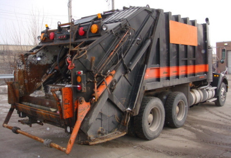

The Class Garbage Service manages many garbage trucks, recycling trucks, recycling plants, and garbage plants where we reuse garbage or burn it for energy. The CGS garbage and recycling trucks look very similar, you can see a picture of one below. CGS uses GSIs - Giant Stinger Insects - to carry garbage and recycling from remote places. CGS is a new Class Services branch, and therefore only about 600 garbage collectors have finished training - much lower that all of the other branches. We would appreciate anyone who would like to help start up this new branch becoming a garbage and recycling collector!
If you are a CGS garbage or recycling collector, there will be a page to access your collector portal soon. However, it is not available yet. You will be contacted when it is released.
